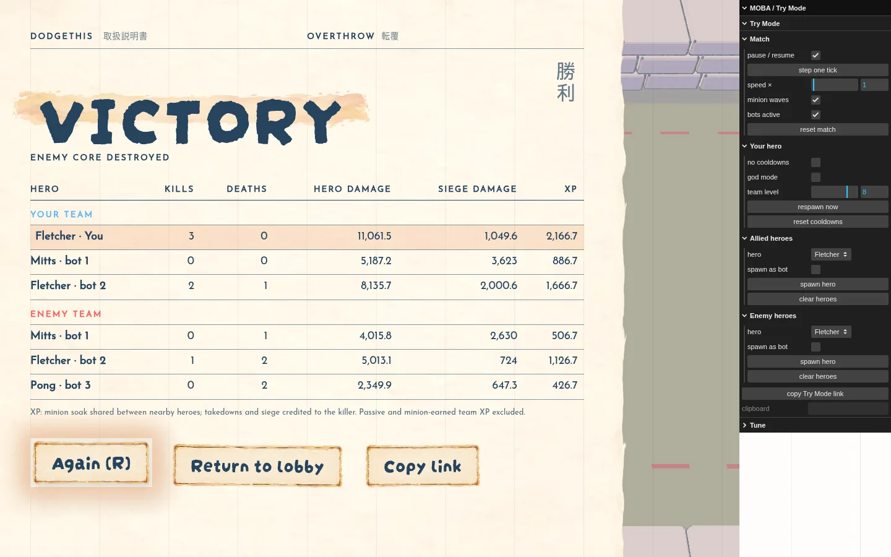
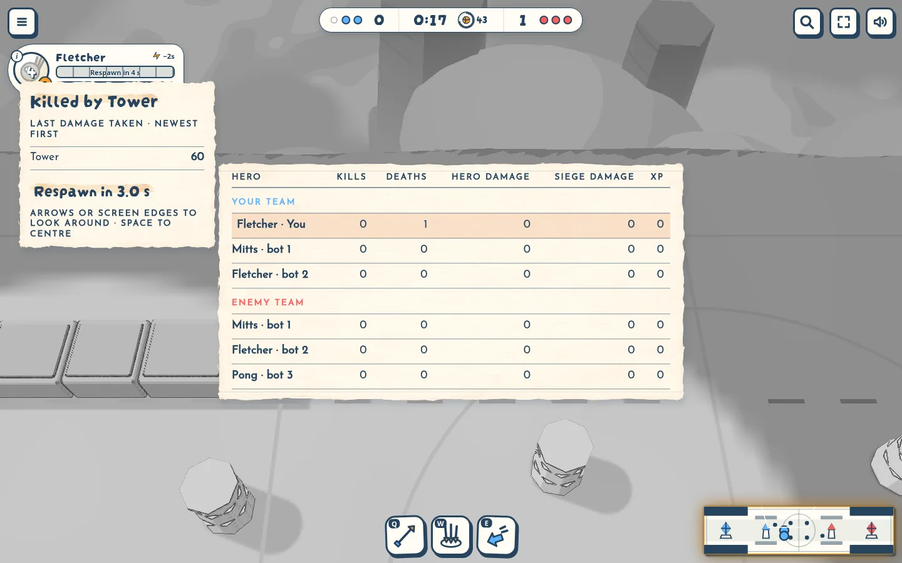
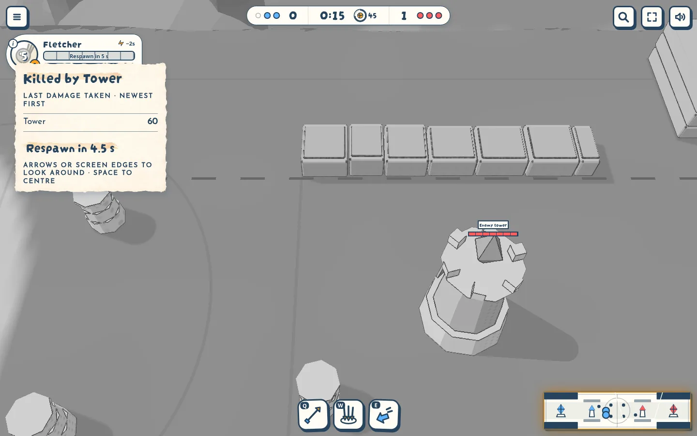

Paper screens
Decided · 2026-10-11 · thr_nq4drca5xd
Do result, scoreboard and death recap belong with the pause menu?



Decided · 2026-10-11 · thr_nq4drca5xd
Do result, scoreboard and death recap belong with the pause menu?


